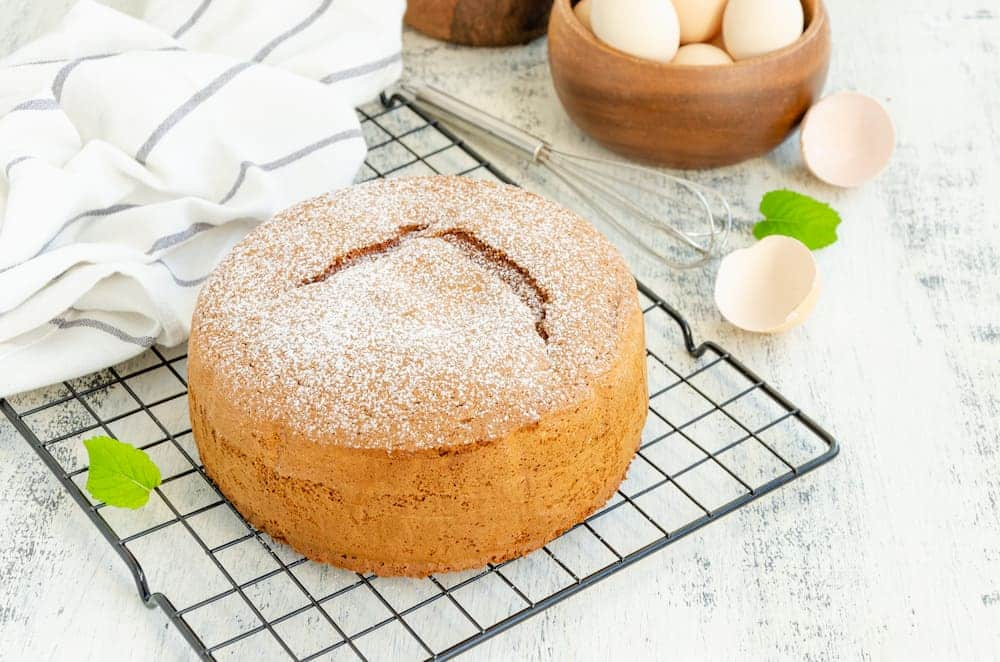

Muffins de vainilla
Pasos- En un bol vamos a colocar los 3 huevos y los vamos a batir con el azúcar. La idea es batir con tenedor o batidor hasta que se haga una crema.
- Ahora vamos a agregar la mitad de la harina. Si usan harina común le pueden agregar en este paso 1 cda de polvo de hornear. Una vez que esté todo bien integrado, sumamos la esencia de vainilla (bastante, son muffins de vainilla) y el aceite. Este es el paso para agregar un extra si así lo quisiera: unas nueces, coco rallado, unos chips de chocolate. Lo que quieran.
- Cuando esté todo bien super integrado, colocamos el resto del harina. Podemos pasar la masa a una manga o rellenar los pirotines o moldes de muffins con una cuchara.
- Llevar los muffins de vainilla a un horno a 180° por unos 20 minutos o hasta que estén.
Torta 1234

Pasos- Batir los huevos con el azúcar hasta obtener una mezcla espumosa y de color claro. Agregar la leche y el aceite (o manteca derretida y apenas tibia), y seguir batiendo hasta integrar.
- Incorporar la harina tamizada de a poco, mezclando con movimientos envolventes, con ayuda de una espátula.
- Agregar la vainilla o ralladura de limón, e integrar.
- Volcar la mezcla en molde enmantecado y enharinado.
- Llevar a horno medio precalentado (180°C, con calor arriba y abajo). Colocar el molde en la rejilla del centro y cocinar por 40-45 minutos, o hasta que la superficie esté ligeramente dorada.
- Pinchar con un palillo o con la punta de un cuchillo: si sale seco, está lista.
- Dejar entibiar y desmoldar.